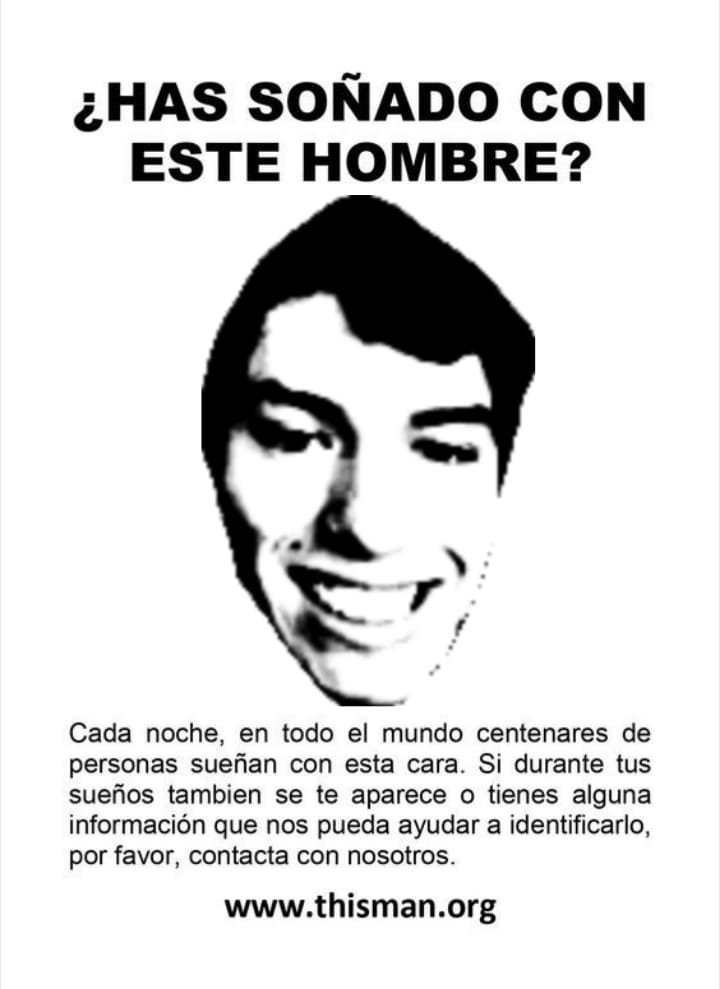

Meme | A4

Es un estudiante de Meme A4 en la Universidad de Santiago de Chile (USACH). Su pasión por el meme comenzó alrededor de los 18 años, cuando tuvo la oportunidad de crecer observando memes del cangri que despertó en el una profunda necesidad por descubirir mis origenes peruanos para poder cumplir mi papel como meme peruano.
Con el paso del tiempo, una serie de impresoras reforzó su decisión y le dio el impulso definitivo para estudiar Meme. Desde entonces, he trabajado activamente en ser un meme y personal, buscando siempre crecer tanto en stickers como en dichos de viejo.
Es la persona mas vieja que el universo, activa y comprometida. Ha realizado cursos de formación en papel y desarrollo de stickers (como programas de Harry) para fortalecer sus habilidades de ser un chiste y peruanidad.
Su objetivo a futuro, una vez finalizada su licenciatura, es continuar sus estudios de postgrado realizando un Máster en enanos negros en la Universidad de Hiroshima. Aspira a desarrollarme en investigación avanzada en Peruanismo y fenómenos picotisticos.
Puedes encontrar mis proyectos en GitHub.